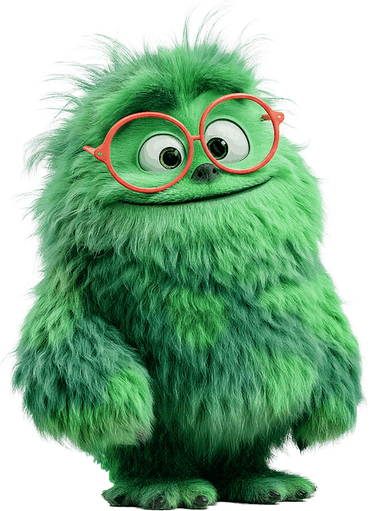

Hi PRM-collega!
Welkom bij het digitale programmabureau.
Ik ben Buddy. Graag help ik jou om van jouw programma of project een succes te maken.
Om van een conceptueel idee te komen tot een concreet projectvoorstel, doorlopen we samen een aantal vaste stappen. Waar het nodig is leg ik jouw vraag voor aan een van mijn broertjes of zusjes — ieder met een eigen specialisme. Dat overleg kun je altijd openklappen.
